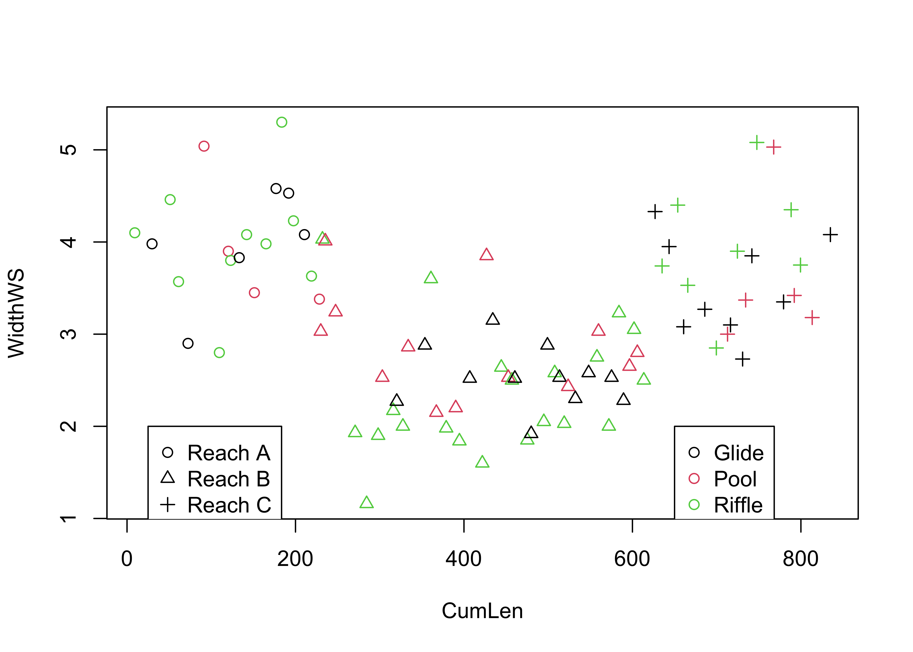
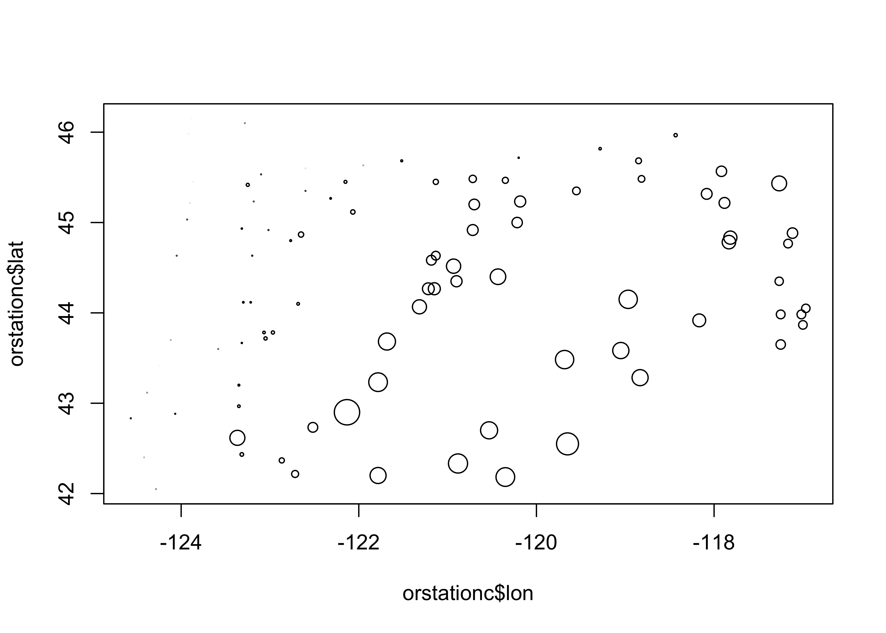
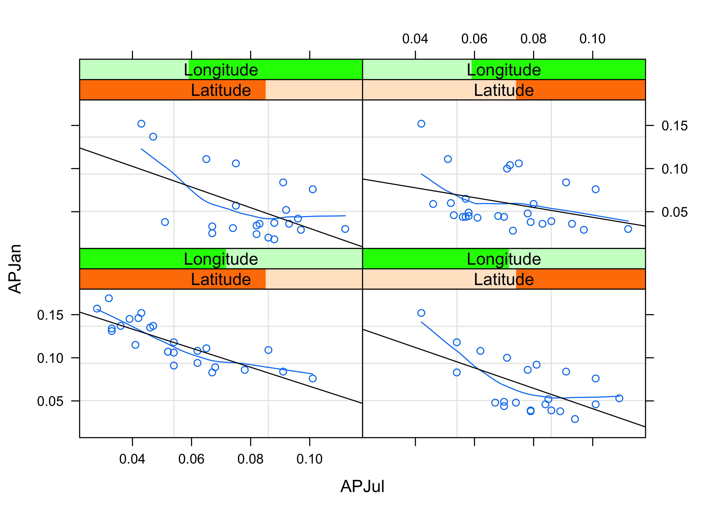

Multivariate Plots
NOTE: This page has been revised for Spring 2020, but may undergo further edits.
1 Introduction
Multivariate descriptive displays or plots are designed to reveal the relationship among several variables simulataneously.. As was the case when examining relationships among pairs of variables, there are several basic characteristics of the relationship among sets of variables that are of interest. These include:
- the forms of the relationships
- the strength of the relationships, and
- the dependence of the relationships on external (usually to the pairs of variables being examined) circumstances.
The easiest way to get the data for the multivariate plotting examples is to load a copy of the workspace geog495.RData
2 Enhanced basic plots
2.1 Enhanced 2-D Scatter plots
The scatter diagram or scatter plot is the workhorse bivariate plot, and can be enhanced to illustrate relationships among three (or four) variables.
2.1.1 The color-coded scatter plot (color plot)
A basic “color plot”" displays the values of three variables at a time using colored symbols, where the value of one variable determines the relative position of the symbol along the X-axis and the value of a second variable determines the relative position of the symbol along the Y-axis, and the value of the third variable is used to determine the color of the symbol.
The Specmap data set illustrated the variations over time of oxygen-isotope data (that records global ice volume, negative values mean little ice or globally warm conditions, positive values, large ice sheets, and globally cold conditions) which should theoretically depend on insolation (incoming solar radiation) at 65 N, which has been called the “pacemaker of the ice ages”. However, a simple plot of Insolation and O18 (and correlation) suggests otherwise:
The cloud of points (at first glace) is quite amorphous, and the correlation coefficient is also quite low:
## [1] -0.2415094Plotting O18 as a function of Age, and color coding the symbols by Insol levels, reveals the nature of the control of ice volume by insolation:
library(RColorBrewer)
library(classInt) # class-interval recoding library
plotvar <- Insol
nclr <- 8
plotclr <- brewer.pal(nclr,"PuOr")
plotclr <- plotclr[nclr:1] # reorder colors
class <- classIntervals(plotvar, nclr, style="quantile")
colcode <- findColours(class, plotclr)
plot(O18 ~ Age, ylim=c(2.5,-2.5), type="l")
points(O18 ~ Age, pch=16, col=colcode, cex=1.5)
Now it’s possible to see that warm (and warming) intervals (points near the top of the plot) tend to have high (orange) solar radiation values, while cooling and cold intervals follow periods of declining solar radiation (blue).
2.2 Color and symbols
Information from four variables at a time can also be displayed. In this example for the Summit Cr. data (a scatter plot of WidthWS as a function of CumLen), the plotting character is determined by Reach and its color by HU. Although these are factors, numerical variables could also be plotted.
attach(sumcr)
plot(WidthWS ~ CumLen, pch=as.integer(Reach), col=as.integer(HU))
legend(25, 2, c("Reach A", "Reach B", "Reach C"), pch=c(1,2,3), col=1)
legend(650, 2, c("Glide", "Pool", "Riffle"), pch=1, col=c(1,2,3))
Note the use of two applications of the legend() function: the circles indicate the upstream grazed reach (reach A), the triangles indicate the cattle-exclosure reach (B), and the pluses indicate the downstream grazed reach (C), while black indicates glides, red indicates pools, and green indicates riffles.
2.3 The bubble plot
The bubble plot displays the values of three variables at a time using graduated symbols (usually circles), where the value of one variable determines the relative position of the symbol along the X-axis and the value of a second variable determines the relative position of the symbol along the Y-axis, and the value of the third variable is used to determine the size of the symbol. Here’s a crude map of the elevations of the Oregon climate stations, which reflects the overall topography of the state.
 [Back to top]
3 3-D Scatter plots
3-D scatter plots (as distinct from scatter plot matrices involving three variables), illustrate the relationship among three variables by plotting them in a three-dimensional “workbox”. There are a number of basic enhancements of the basic 3-D scatter plot, such as the addition of drop lines, lines connecting points, symbol modification and so on.
3.1 3-D point-cloud plot
This plot displays the values of three variables at a time by plotting them in a 3-D “workbox” where the value of one variable determines the relative position of the symbol along the X-axis and the value of a second variable determines the relative position of the symbol along the Y-axis, and the value of the third variable is used to determine the relative position along the Z-axis. This plot makes use of the lattice package.

Notice that you can still see the outline of the state, because elevation is a fairly well behaved variable.
3.2 3-D Scatter plots (using the scatterplot3d package)
The scatterplot3d package (by Ligges and Mächler) provides a way of constructing a 3-point cloud display with some nice embellishments. The first part of the code, like in making maps, does some setup like determining the number of colors to plot and getting their definitions. The second block produces the plot.
library(scatterplot3d)
library(RColorBrewer)
# get colors for labeling the points
plotvar <- pann # pick a variable to plot
nclr <- 8 # number of colors
plotclr <- brewer.pal(nclr,"PuBu") # get the colors
colornum <- cut(rank(plotvar), nclr, labels=FALSE)
colcode <- plotclr[colornum] # assign color
# scatter plot
plot.angle <- 45
scatterplot3d(lon, lat, plotvar, type="h", angle=plot.angle, color=colcode, pch=20, cex.symbols=2,
col.axis="gray", col.grid="gray")
The z-variable, in this case, annual precipitation, is plotted as a dot, and for interpretability a drop line is plotted below the dot. This simple addition facilitates finding the location of each point (where it hits the x-y, or latitude-longitude plane), as well as the value of annual precipitation.
Maps can be added to the 3-D scatter plot to improve interpretability:
library(maps)
# get points that define Oregon county outlines
or_map <- map("county", "oregon", xlim=c(-125,-114), ylim=c(42,47), plot=FALSE)
# get colors for labeling the points
plotvar <- pann # pick a variable to plot
nclr <- 8 # number of colors
plotclr <- brewer.pal(nclr,"PuBu") # get the colors
colornum <- cut(rank(plotvar), nclr, labels=FALSE)
colcode <- plotclr[colornum] # assign color
# scatterplot and map
plot.angle <- 135
s3d <- scatterplot3d(lon, lat, plotvar, type="h", angle=plot.angle, color=colcode,
pch=20, cex.symbols=2, col.axis="gray", col.grid="gray")
s3d$points3d(or_map$x,or_map$y,rep(0,length(or_map$x)), type="l")The map() function generates the outlines of a map of Oregon counties, and stores them in or.map, then the colors are figured out, and finally a 3-D scatter plot is made (using the scatterplot3d() function, and finally a 3-D scatter plot is made (using the scatterplot3d() function, and the points and droplines are added.
4 OpenGL surface and point plots
The rgl package (by D. Alder and Duncan Murdoch) can be used to plot points (and surfaces and lines) in a 3-D space. The main feature that distinguishes this approach is the ability to rotate the cloud of points “on the fly.” Here’s what the code looks like, and when the image appears, it can be rotated and spun by dragging the mouse within the window. Holding down the left button while dragging rotates the balls, while holding down the right changes the perspective.

5 Trellis/Lattice graphics
Many data sets include a mixture of both “continuous” (ordinal-, interval- or ratio-scale variables) and “discrete” (nominal-scale variables). Often, the issue might arise of how a particular relationship between variables might differ among groups. Information of that nature can be gained using conditioning plots (or coplots). Such plots are part of a general scheme of visual data analysis, known as Trellis Graphics that has been created by the developers of the S language. Trellis Graphics are implemented in R using the package Lattice.
5.1 Coplots (conditioning scatter plots)
Conditioning scatter plots involves creating a multipanel display, where each panel contains a subset of the data. This subset can be either a) those observations that fall in a particular group, or b) they may represent a the values that fall within a particular range of the values of a variable. The idea is that the individual panels should illustrate the relationship between a pair of variables, over part of the range of the two marginal “conditioning” variables (i.e. the relationship “conditional on one marginal variable lying in one particular interval, and the other lying in a different interval.”)
This coplot contains scatter diagrams for Yes as a function of the log(10) of Population, conditioned by country (i.e. one “response” variable and one “conditioning” variable.)
library(lattice)
attach(scanvote)
coplot(Yes ~ log10(Pop) | Country, columns=3,
panel=function(x,y,...) {
panel.smooth(x,y,span=.8,iter=5,...)
abline(lm(y ~ x), col="blue") }
)
Note the use of the “panel” function here. Basically, what’s going on is that the coplot() function is determining which subset of observations should appear in each panel, while the two function calls within the panel() function (panel.smooth() and abline()) perform their tasks on that subset of observations. In other words, coplot() selects the observations of Yes and log(Pop) for a particular panel (i.e. Country), sends these to the panel function, which passes them on (relabeled as x and y), and plots the points, and then panel.smooth() and albline() draw a lowess curve and least-squares line for those observations on each panel (more about those later). The general idea is to compare the panels (countries) seeing where in the panel the points lie and what the relationship looks like. The general relationship between population and percent of Yes votes is apparent, as well as country-to-country differences, like the generally greater proportion of Yes votes in Finland.
5.2 Coplot, conditioning by one continuous numeric variable
Most of the time, the conditioning variables are continuous numeric variables. Here’s a coplot for WidthWS as a function of DepthWS in the Summit Cr. data set, conditioned by CumLen (or distance downsteam):
attach(sumcr)
coplot(WidthWS ~ DepthWS | CumLen, pch=14+as.integer(Reach), cex=1.5,
number=3, columns=3,
panel=function(x,y,...) {
panel.smooth(x,y,span=.8,iter=5,...)
abline(lm(y ~ x), col="blue")
}
)
We know the arrangement of the reaches, and so the resulting plot should be no surprise. The plotting characters are determined by Reach, to reveal the extent of overlap in the conditioning “shingles.” The plot could be regenerated using Reach as the conditioning variable, which would result in no overlap between the individual panels.
It’s easy to see that the two grazed reaches (A upstream and C downstream) have generally wider channels, which would be expected. Something that is not apparent in ordinary plots of the data is that the “normal” or expected inverse relationship between width and depth (as one gets bigger the other gets smaller) does not apply in the middle (exclosure) reach.
6 More Lattice Plots
“Trellis” plots are the R version of Lattice plots that were originally implemented in the S language at Bell Labs. The aim of these plots is to extend the usual kind of univariate and bivariate plots, like histograms or scatter plots, to situations where some external variables, possibly categorical or “factor” variables, may influence the distribution of the data or form of a relationship. They do this by generating a trellis or lattice of plots that consist of an array of simple plots, arranged according to the values of some “conditioning” variables.
6.1 Multipanel plots
A multipanel plot, in which the individual panels are “conditioned” by the value of a third variable, here longitude, can be illustrated for the Oregon climate station data using the following script:
# make a factor variable indicating which longitude band a station falls in
Lon2 <- equal.count(lon,8,.5)
# plot the lattice plot
plot1 <- xyplot(pann ~ elev | Lon2,
layout = c(4, 2),
panel = function(x, y) {
panel.grid(v=2)
panel.xyplot(x, y)
panel.loess(x, y, span = 1.0, degree = 1, family="symmetric")
panel.abline(lm(y~x))
},
xlab = "Elevation (m)",
ylab = "Annual Precipitation (mm)"
)
print(plot1, position=c(0,.375,1,1), more=T)
# add the shingles
print(plot(Lon2), position=c(.1,0.0,.9,.4))The idea here is to chop longitude into eight bands from west to east using the equal.count() function. (The third argument here, 0.5, indicates that the bands should overlap by 50 percent.) Then the lattice plot is made using the xyplot() function, which makes a separate scatter plot for each longitude band, showing the relationship between annual precipitation and elevation. A “shingles” plot is added at the bottom to indicate the range of longitudes that go into each plot.
Notice that in each panel, a straight regression line (more about regression later) and a smooth lowess curve have been added to help summarize the relationships. The panels are arranged in longitudinal order from low (west) to high (east, remember that in the western hemisphere, longitudes are negative). The plots are certainly interesting. The general idea is that precipitation should increase with increasing elevation, but at least for the western part of the state the reverse seems to be true! What is going on here is that proximity to the Pacific is a much more important control than elevation, and low elevation coastal and inland stations are quite wet. In the eastern part of the state (top row of panels), the expected relationship holds, but it’s kind of hard to see because the wet western part of the state stretches out the scale.,
The following plots explore the seasonality of precipitation in the Yellowstone region. This first plot uses glyphs to show the values of twelve monthly precipitation variables as “spokes” of a wheel, where each variable is plotted relative to its overall range. The first block of code below sets things up, and the stars() function does the plotting.
## Linking to GEOS 3.7.2, GDAL 2.4.2, PROJ 5.2.0## The following object is masked _by_ .GlobalEnv:
##
## Lon2# simple map
# read and plot shapefiles
ynp_state_sf <- st_read("/Users/bartlein/Documents/geog495/data/shp/ynpstate.shp")## Reading layer `ynpstate' from data source `/Users/bartlein/Documents/geog495/data/shp/ynpstate.shp' using driver `ESRI Shapefile'
## Simple feature collection with 3 features and 1 field
## geometry type: LINESTRING
## dimension: XY
## bbox: xmin: -112.2967 ymin: 42.69208 xmax: -107.7095 ymax: 46.22544
## epsg (SRID): 4326
## proj4string: +proj=longlat +ellps=WGS84 +no_defsplot(st_geometry(ynp_state_sf))
ynprivers_sf <- st_read("/Users/bartlein/Documents/geog495/data/shp/ynprivers.shp")## Reading layer `ynprivers' from data source `/Users/bartlein/Documents/geog495/data/shp/ynprivers.shp' using driver `ESRI Shapefile'
## Simple feature collection with 4 features and 1 field
## geometry type: LINESTRING
## dimension: XY
## bbox: xmin: -112.2967 ymin: 42.69208 xmax: -107.7095 ymax: 46.22544
## epsg (SRID): 4326
## proj4string: +proj=longlat +ellps=WGS84 +no_defsplot(st_geometry(ynprivers_sf), add = TRUE)
ynplk_sf <- st_read("/Users/bartlein/Documents/geog495/data/shp/ynplk.shp")## Reading layer `ynplk' from data source `/Users/bartlein/Documents/geog495/data/shp/ynplk.shp' using driver `ESRI Shapefile'
## Simple feature collection with 1 feature and 1 field
## geometry type: LINESTRING
## dimension: XY
## bbox: xmin: -110.566 ymin: 44.29883 xmax: -110.1902 ymax: 44.56021
## epsg (SRID): 4326
## proj4string: +proj=longlat +ellps=WGS84 +no_defsplot(st_geometry(ynplk_sf), add = TRUE)
points(Lon, Lat, pch=3, cex=0.6)
# stars plot for precipitation ratios
col.red <- rep("red",length(orstationc[,1]))
stars(yellpratio[,4:15], locations=as.matrix(cbind(Lon, Lat)),
col.stars=col.red, len=0.2, lwd=1, key.loc=c(-111.5,42.5), labels=NULL, add=T)Here the stars wind up looking more like fans. The legend indicates that stations with fans that open out to the right are stations with winter precipitation maxima (like in the southwestern portion of the region) while those that open toward the left have summer precipitation maxima (like in the southeastern portion of the region).
The next examples show a couple of conditioning plots (coplots), that illustrate the relationship between January and July precipitation, as varies (is conditioned on) with elevation. The first block of code does some set up.
# create some conditioning variables
Elevation <- equal.count(Elev,4,.25)
Latitude <- equal.count(Lat,2,.25)
Longitude <- equal.count(Lon,2,.25)
# January vs July Precipitation Ratios by Elevation
plot2 <- xyplot(APJan ~ APJul | Elevation,
layout = c(2, 2),
panel = function(x, y) {
panel.grid(v=2)
panel.xyplot(x, y)
panel.loess(x, y, span = 1.0, degree = 1, family="symmetric")
panel.abline(lm(y~x))
},
xlab = "APJul",
ylab = "APJan")
print(plot2, position=c(0,.375,1,1), more=T)
print(plot(Elevation), position=c(.1,0.0,.9,.4))
The plot shows that the relationship between January and July precipitation indeed varies with elevation. At low elevations, there is proportionally lower January precipitation for the same July values (lower two panels on the lattice plot), but at higher elevations, there is proportionally more (top two panels). This relationship points to some orographic (i.e. related to the elevation of the mountains) amplification of the winter precipitation.
The next plot shows the variation of the relationship between January and July precipitation as it varies spatially.
# January vs July Precipitation Ratios by Latitude and Longitude
plot3 <- xyplot(APJan ~ APJul | Latitude*Longitude,
layout = c(2, 2),
panel = function(x, y) {
panel.grid(v=2)
panel.xyplot(x, y)
panel.loess(x, y, span = .8, degree = 1, family="gaussian")
panel.abline(lm(y~x))
},
xlab = "APJul",
ylab = "APJan")
print(plot3)
Notice that the steepest curve lies in the panel representing the southwestern part of the region (low latitude and low longitude, i.e. the bottom left panel), which suggests that winter (January) precipitation is relatively more import there, which is also apparent on the stars plot above.
Next, the general idea that seems to be emerging, that there variations within the region of the relative importance of summer and winter precipitation can be explored by a parallel-coordinate plot, that allow different precipitation “regimes” to be detected by the appearance of distinct “bundles” of curves.
# Parallel plot of precipitation ratios
plot4 <- parallelplot(~yellpratio[,4:15] | Elevation,
layout = c(4, 1),
ylab = "Precipitation Ratios")
print(plot4)
Notice that at low elevations, most of the stations are behaving similarly, and showing a distinct summer precipitation maximum (and only one station seems to show a winter maximum). At high elevations, there is more variability but a general tendency for winter precipitation to dominate.
Lattice plots can extend many of the basic univariate and bivariate plots. For example, a set of scatter plot matrices can be generated, for the high/low latitude and longitude slices.
# Lattice plot of scatter plot matrices
plot5 <- splom(~cbind(APJan,APJul,Elev) | Latitude*Longitude)
print(plot5)
These plots provide a different prospective on the variations of precipitation across the region, but they’re consistent with what the other plots show.
7 Lattice-like plots of maps (using ggplot())
The ggplot2 package can produce lattice-like multipanel plots, by “faceting”, and for spatial data provides an alternative to spplot in the spatial (sp) package. Ploting with ggplot2 will be the focus of an upcoming lecture.
The following example uses a data set of locations and elevations Oregon cirque basins (upland basins eroded by glaciers), and whether or not they are currently (early 21st century) glaciated. Whether a cirque is occupied by a glacier or not is basically determined by the trade-off between snow accumulation (and hence winter precipitation) and summer ablation (or melting, and hence summer temperature. Cirque basins not currently occupied by glaciers were, of course, occupied in the past, while those occupied today indicate where “glacier-safe” climate prevails (at least for now).
In the code below, the two as.factor() functions are used to turn the single variable cirques_sf$Glacier, which has the values “G” and “U”, into two “binary” (0 or 1) variables. The variable cirques_sf$Glaciated will contain 1’s for glaciated cirques, and 0 otherwise (i.e. unglaciated cirques), while the variable cirques_sf$Unglaciated will contain 1’s for unglaciated cirques, and 0 otherwise. The two variables are obviously redundant (the elements would sum to 1 for each observation), but it makes the illustration of the method more transparent.
# multi-panel lattice plot
cirques_sf$Glaciated <- ifelse(cirques_sf$Glacier=="G",1,0)
cirques_sf$Unglaciated <- ifelse(cirques_sf$Glacier=="U",1,0)Use the ggplot() function in the ggplot2 package (note the name distinction), to produce simple map of cirque locations.
ggplot() +
geom_sf(data = orotl_sf) +
geom_point(aes(cirques_sf$Lon, cirques_sf$Lat), size = 2.0 , color = cirques_sf$Glaciated + 1) +
labs(x = "Longitude", y = "Latitude") +
theme_bw()
It’s pretty easy to see where the glaciated cirques occur.
Here are two multi-panel plots constructed using “facets”, the first plotting separate maps for glaciated and unglaciated cirques, and the second plotting cirques by region.
ggplot(cirques_sf) +
geom_sf(data = orotl_sf) +
geom_point(aes(Lon, Lat), size = 1.0 , color = cirques_sf$Glaciated + 1) +
facet_wrap(~Glacier) +
labs(x = "Longitude", y = "Latitude") +
theme_bw()
ggplot(cirques_sf) +
geom_sf(data = orotl_sf) +
geom_point(aes(Lon, Lat), size = 1.0 , color = cirques_sf$Glaciated + 1) +
facet_wrap(~Region) +
labs(x = "Longitude", y = "Latitude") +
theme_bw()
This way of mapping the cirques could also have been done by plotting a simple shape file, and then putting points on top, e.g.
plot(st_geometry(orotl_sf))
points(cirques_sf$Lon, cirques_sf$Lat, col=3-as.integer(cirques_sf$Glacier))
legend(-118, 43.5, c("Glaciated","Unglaciated"), pch=c(1,1), col=c(2,1))
8 Readings
- Kuhnert & Venebles (An Introduction…): p. 86-96, 179-201;
- Rossiter (Introduction … ITC): sections 5.1 and 5.2.
The main documentation for Trellis graphics includes:
two .pdf documents published by the developers of the S language and Trellis Graphics, Lucent Technology.